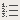

To apply a format to a paragraph, begin from the KompoZer
window:
Click to place the insertion point where you want the format
to begin, or select the text you want to format.
Choose a paragraph format using the drop-down list in the Format
toolbar:
Body Text: Applies
the application default font and style for regular text, without
affecting the spacing before or after the text.
Paragraph: Inserts a paragraph tag (use this to
begin a new paragraph). The paragraph includes top and bottom
margins.
Heading 1 - Heading 6: Formats
the paragraph as a heading. Heading 1 is the highest-level heading,
while Heading 6 is the lowest-level heading.
Address: Can be used for a web page "signature"
that indicates the author of the page and the person to contact for
more information, for example: user@example.com
You might want to include the date and a copyright notice. This
format usually appears at the bottom of the web page under a
horizontal line. Navigator displays the address format in italics.
Preformat: This is useful for elements such as
code examples, column data, and mail messages that you want displayed
in a fixed-width font. In normal text, most browsers remove extra
spaces, tabs, and paragraph returns. However, text that uses the
Preformatted style is displayed with the white space intact,
preserving the layout of the original text.
To format text as a heading:
Click to place the insertion point anywhere within the text
that you want to format.
Using the drop-down list in the Format toolbar, choose the level
of heading you want, from 1 (largest) to 6 (smallest). Choose "Heading
1" for your main heading, "Heading 2" for the next level, and so
forth.
To apply a list item format:
Click to place the insertion point within the line of text
that you want to format.
Open the Format menu and choose List.
Choose the list style:
Bulleted: Each
item has a bullet (dot) next to it (as in this list).
Numbered: Items are numbered.
Term and Definition: These two
styles work together, creating a glossary-style appearance. Use the
Term tag for the word being defined, and the Definition tag for the
definition. The Term text appears flush left, and the Definition text
appears indented.
Tip: You can quickly apply a list style to a block
of text by selecting the text
and clicking the Numbered List

or Bulleted List
buttons on the Format toolbar.
To change the style of bullets or numbers:
Click to place the insertion point within the text of the
list item you want to change, or select one or more items in the list
if you want to apply a new style to the entire list.
Open the Format menu and choose List Properties.
Select a bullet or number style from the drop-down list. For
numbered lists, you can specify a starting number. For bulleted lists,
you can change the bullet style.
Tip: You can also double-click on a bullet or
number in a list to display the List Properties dialog box.
To align a paragraph or text in your page, for example, centering
or aligning to the left or right:
Click to place the insertion point within the paragraph or
line of text you want to align.
Open the Format menu and choose Align; then choose an alignment
option.
Note: You can also use the Format toolbar to align
text.
Click to place the insertion point at the end of the last
list item and press Enter (Return on Mac OS) twice to end the
list.
To change one or more list items to body text:
Click to place the insertion point within the list item, or
select the list items.
In a numbered list, click the numbered list button (or in a
bulleted list, click the bulleted list button) in the Format
toolbar.
To position indented text below a list item:
Click to place the insertion point within the list item.
Press Shift-Enter to create the hanging indent.
Type the text you want to indent.
Press Shift-Enter to create another indented paragraph, or press
Return to create the next list item.
Tip:
You can increase or decrease the indentation of list items by clicking
anywhere in a list item and then clicking the Indent or Outdent button
on the Format toolbar. Alternatively, click anywhere in a list item
and press Tab to indent one level. Press Shift+Tab to outdent one
level.
To merge two adjacent lists:
Select the two lists that you want to merge. Be sure to
select all of the elements in both lists. Note that any text in
between the two lists will also become part of the merged list.
Click the bulleted or numbered list button in the Format toolbar
to merge the lists.
To change the style, color, or font of selected text:
Select the text you want to format.
Open the Format menu and choose one of the following:
Font: Use this to
choose a font. If you prefer to use fonts specified by the reader's
browser, select Variable Width or Fixed Width.
Note: Not all fonts installed on your computer
appear. Instead of specifying a font that may not be available to all
who view your web page, it's generally best to select one of the fonts
provided in the menu since these fonts work on every computer. For
example, the fonts Helvetica, Arial, Times, and Courier generally look
the same when viewed on different computers. If you select a different
font, it may not look the same when viewed using a different
computer.
Size: Use this to choose a relative font
size or select an option to increase or decrease text size (relative
to the surrounding text).
Text Style: Use this to select a style, such as
italic, bold, or underline, or to apply a structured style, for
example, Code.
Text Color: Use this to choose a color from
the color picker. If you are familiar with HTML hexadecimal
color codes, you can type a specific code or you can just type a
color name (for example, "blue"). You'll find a handy color code
converter here.
To change the background color of the page:
Click anywhere in the page.
Click the background color block in the Format toolbar.
Choose a background color from the Block Background Color dialog
box.
Click OK.
Tip: To quickly change the color of text to the
color last used, select the text, then press Shift and click on the
text color block in the Format toolbar. This is useful when you want
to use one color for separate lines of text.
To find text in the page you're currently working on:
Click to place the insertion point where you want to begin your
search.
Open the Edit menu and choose Find and Replace. You see the Find
and Replace dialog
box.
Type the text you want to locate in the "Find what" field. To
narrow the search, check one or more of the following options:
Match upper/lower case: Use this to specify
whether the search is for
case-sensitive text.
Wrap around: Use this to search to the end
of the page and then start
again from the top or bottom, depending on whether you are
searching forward or
backwards.
Search backwards: Use this to search back
from the insertion point to the beginning of the page.
Click Find Next to begin searching. When KompoZer
locates the first occurrence of the
text, click Find Next to search for the next occurrence.
Click Close when you are done.
To find and replace text in the page you're currently working
on:
Click to place the insertion point where you want to begin your
search.
Open the Edit menu and choose Find and Replace. You see the Find
and Replace dialog box.
Type the text you want to find and then type the replacement
text.
To narrow the search, check one or more of the following
options:
Match upper/lower case: Use this to specify
whether the search is for case-sensitive text. If you don't select
this option, the search will find matching text in both upper and
lower case.
Wrap around: Use this to search to the end of
the page and then start again from the top.
Search backwards: Use this to search from the
end to the beginning of the page.
Click Find Next to search for the next
occurrence. KompoZer selects the next occurrence of the
text.
Click Replace to replace the selected text with the replacement
text. Click Replace and Find to replace the selected text and find
the next occurrence. Click Replace All to replace every occurrence
in the document with the replacement text.
Horizontal lines are typically used to separate different sections
of a document visually. To insert a horizontal line (also called a
rule) in your page, begin from the KompoZer
window:
Click to place the insertion point where you want the line to
appear.
Open the Insert menu and choose Horizontal Line.
Setting Horizontal Line
Properties
You can customize a line's height, length, width, alignment, and
shading.
Double-click the line to display the Horizontal Line Properties
dialog box.
Edit any of these properties:
Width: Enter the width and then choose "%
of window" or "pixels." If you
specify width as a percentage, the line's width changes
whenever the KompoZer
window's or browser window's width changes.
Height: Type a number for the line's height
(in pixels).
3-D Shading: Select this to add depth to
the line by adding a bevel
shading.
Alignment: Specify where you want to place
the line (left, center, or
right).
Click Use as Default to use these settings as the default the
next time you insert a horizontal line.
To edit the properties of a horizontal line manually, click
Advanced Edit. See the section, Advanced Property
Editor, for details.
Tip: You can select "Show All Tags" from the View
menu to show all the HTML elements in yellow boxes. Click any yellow
box to select everything within that HTML tag or element. Double-click
any yellow box to display the Advanced Property
Editor dialog box for that HTML tag or element.
To insert special characters such as accent marks, copyrights, or
currency symbols:
Click to place the insertion point where you want the special
character to appear.
Open the Insert menu and choose Characters and Symbols. You see
the Insert Character dialog box.
Select a category of characters.
If you choose Accent Uppercase or Accent Lowercase, then open
the Letter drop-down list and select the letter you wish to apply an
accent to. (Note: not all letters have accented forms.) Select Common
Symbols to insert special characters such as copyright symbols or
fractions.
From the Character drop-down list, select the character you want
to insert.
Click Insert.
You can continue typing in your document (or in a mail compose
window) while you keep this dialog box open, in case you want to use
it again.
Click Close when you are done inserting special characters.
If you understand how to work with HTML source code, you can insert
additional tags, style attributes, and JavaScript into your page. If
you are not sure how to work with HTML source code, it's best not to
change it. To work with HTML code, use one of these methods:
Place the insertion point where you want to insert the HTML
code, or select the text you want to edit, and then open the Insert
menu and choose HTML. In the Insert HTML dialog box, enter HTML tags
and text, and then click Insert.
Select an element such as a table, named anchor, image, link, or
horizontal line. Double-click the element to open the associated
properties dialog box for that item. Click Advanced Edit to open the
Advanced Property Editor. You can use the Advanced Property Editor to
add HTML attributes, JavaScript, and CSS to objects.
Open the View menu, and choose HTML Source, or click the
<HTML> Source tab in the Edit Mode toolbar at the bottom of the
KompoZer window. (If you don't see the Edit Mode toolbar, open
the View menu and choose Show/Hide; then make sure the Edit Mode
Toolbar is checked.)
Using the Advanced
Property Editor
To add HTML attributes and JavaScript to objects such as tables,
images, and horizontal lines, you can use the Advanced Property
Editor.
Note: Unless you clearly understand how to add,
delete, or modify HTML attributes and their associated values, it's
best not to do so.
If you are not currently viewing the Advanced Property Editor
dialog box, follow these steps:
From the View menu (or the Edit Mode toolbar), choose Show All
Tags.
Double-click the object that you want to modify to open its
Properties dialog box.
Click Advanced Edit to open the object's Advanced Property
Editor. The Advanced Property Editor has three tabs, each of which
lists the current properties for the selected object:
HTML Attributes: Click this tab to view or
enter additional HTML
attributes.
Inline Style: Click this tab to view or enter
additional CSS (cascading style sheet) properties through the
<style> attribute. For more information on using CSS styles
in KompoZer, see KompoZer
Preferences.
JavaScript Events: Click this tab to view
or enter JavaScript events.
To edit a property or attribute in any of the three lists,
select the attribute you want to edit. You can then edit the
attribute's name or value using the editable Attribute and Value
fields at the bottom of the dialog box. To add a new attribute, type
it in the Attribute field at the bottom of the dialog box. The new
attribute is automatically added when you click in the Value
field. To remove an attribute, select it in the list, and click
Remove Attribute.
Note: Required attributes are
highlighted in the Attribute list.
Click OK to apply your changes to the Advanced Property Editor
dialog box.
Click OK again to exit the Properties dialog box.
KompoZer automatically places quotation marks around any
attribute text.
Before you put your document on a web server(i.e. publish it), it
is good practice to first check the document's HTML formatting so as
to make sure that it conforms to web standards. Documents containing
validated HTML are less likely to cause problems when viewed by
different browsers. Just visually checking your web pages in your
favourite web browser doesn't ensure that your document will appear
correctly when viewed in other web browsers.
KompoZer provides a convenient way for you to check that
your document conforms to W3C (World Wide Web Consortium) HTML
standards. KompoZer uses the W3C HTML Validation Service,
which checks your document's HTML syntax for compliance with HTML 4.01
standards. This service also provides information on how to correct
errors.
Note: You must be connected to the Internet to use
this feature.
To validate your document's HTML syntax:
Open the Tools menu, and choose Validate HTML. If you have
unsaved changes, KompoZer asks you to save them before
proceeding.
KompoZer will open another window with results for your
page displayed in it after the W3C Validation Service program parses
your html file.
Typically, you won't need to change the editing mode from the
default (Normal). However, if you want to work with the document's
HTML source code, you may want to change editing modes.
KompoZer allows you to quickly switch between four editing
modes or views. Each editing mode allows you to continue working on
your document, but displays varying levels of HTML tags (and tag
icons).
Before you choose an editing mode:
Open the View menu, choose Show/Hide, and then make sure
there is a checkmark next to Edit Mode Toolbar.
The Edit Mode toolbar has four tabs:
Normal: Choose this editing mode to see how
the document will look online while you are creating it. Choose this
mode to show table borders and named anchor icons. All other HTML tag
icons are hidden.
Show All Tags: Choose this mode to show all HTML
tag icons.
<HTML> Source: Choose this mode to view and
edit the document as unformatted HTML source code. When you save the
document, the Normal mode reappears.
Preview: Choose this mode to display and edit the
document exactly as it would appear in a browser window, except that
links and JavaScript functions will not be active.
Note: JavaScript functions, frames, links, Java,
embedded objects and animated GIF files are not active in any of the
editing modes. To display these items in their active state, click the
Browse button on the Composition toolbar to load the page into a
browser window.
KompoZer has an innovative feature of editing/applying
inline styles and applying class or id tags to selected text via its
status bar. Styling using the status bar is possible in all modes
except <HTML> Source viewing mode.
Select Clicking on "Select" will select the
entire text bounded by the style tag.
Remove Tag Clicking on "Remove Tag" will remove
the style tag, and in turn all the styles for that tag will be
removed.
Change Tag Using this option, the user can
change the tag used for the text with the least effort. Clicking on
"Change Tag" makes the text for the corresponding tag to be editable
in the status bar. Type in the desired tag and press "Enter". The
default properties of the tag will be applied to the text in the web
page.
Inline StylesWhile in any of the Normal, HTML
Tags, or Preview viewing modes the tags surrounding the current
position of the cursor are shown in the status bar of
KompoZer's window. Style properties of any of the tags can
be changed by choosing an option from the context menu. To change
inline style properties:
Right click on the tag you wish to edit.
Click on "Inline Styles"
Select the properties section you want to edit:
Text Properties
Border Properties
Background Properties
Box Properties
Aural Properties
Extract and create Generic Style
Secting any of the options except the last one will open the
corresponding tab section from CaScadeS CSS editor (more about
CaScadeS in Using
Style Sheets section). With the corresponding section open, the
user can define his/her own styles which will be saved according to
W3C CSS coding style.
The Extract and create Generic Style option
allows the user to extract the style information into an style rule
and save it in the external/internal style sheet.
Templates offers you two options, "Make
Editable" and "Remove Editable Area", which can be used while
working with Templates. For more information on Templates, see
section Working With
Templates.
ID shows ID tags(if available) from the current
style sheet applied to the document. To apply a particular tag to
the selected text, just click on that ID tag.
Class shows the class tags(if available) from
the current style sheet applied to the document. To apply a class to
the selected text just click on that Class tag.
Advanced Properties allows you to use the
Advanced Property editor for adding HTML attributes and Javascript
to objects such as tables, images, links, etc. See the section, Advanced Property
Editor, for details.